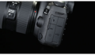

Cannon EOS 5D Mark IV DSLR Camera (Body Only)
- 
-

Description
Continuing on in their legacy of powerful workhorse cameras, Canon has released the 5D Mark IV DSLR which is an outstanding still photography option and an able 4K-capable video machine. This multimedia maven offers a newly developed 30.4MP full-frame CMOS sensor paired with the DIGIC 6+ image processor in order to balance fine detail and resolution with low-light performance and sensitivity. It is able to work within a native range of ISO 100-32000, which can then be expanded to an impressive ISO 50-102400, for sharp, low-noise images in a variety of conditions. Along with these improvements to image quality, users will enjoy a performance boost across the board with an enhanced AF system, built-in Wi-Fi, NFC, and GPS, and much more..
- 30.4 Full-Frame CMOS Sensor
- DIGIC 6+ Image Processor
- 3.2" 1.62m-Dot Touchscreen LCD Monitor
- DCI 4K Video at 30 fps; 8.8MP Still Grab
- 61-Point High Density Reticular AF
- Native ISO 32000, Expanded to ISO 102400
- Dual Pixel RAW; AF Area Select Button
- Dual Pixel CMOS AF and Movie Servo AF
- 7 fps Shooting; CF & SD Card Slots
- Built-In GPS and Wi-Fi with NFC
Reviews
-
David Nov 26, 2016
I've owned the 5D MkIII, as well as the 7D MkII and used them with my EF 500mm f/4L IS II and my EF 1.4x and 2.0x TC-III. These were excellent combinations in many regards, but all were frustrating to use when the 2.0x TC was added to the lens. The AF system were slow to acquire initial focus and then, if you lost focus, it would take around a second to reacquire focus. With the 5D MkIV, initial AF acquisition was almost instantaneous. If I lost focus, it was qui...
-
Jason Jan 19, 2017
Love at first click!. This camera is a quantum leap forward in my humble opinion. I shot an empty pop bottle (i'm Midwestern lol) at 3200 ISO and the image had virtually no noise at all so I'd say compared to the Mark III the ISO performance is greatly improved. The camera is chock full of features, bells and whistles but overall it's a great body and I can't wait to make some amazing images with it
-
Robert Dec 12, 2016
Everything I expected for low light and high shutter speed photography. I am finding I can manage grain at an acceptable level at ISO 12,800 shooting 1/2500th @ f11 for wildlife photography in low/overcast light. Grain is noticeable, but not bad at ISO 25,600.